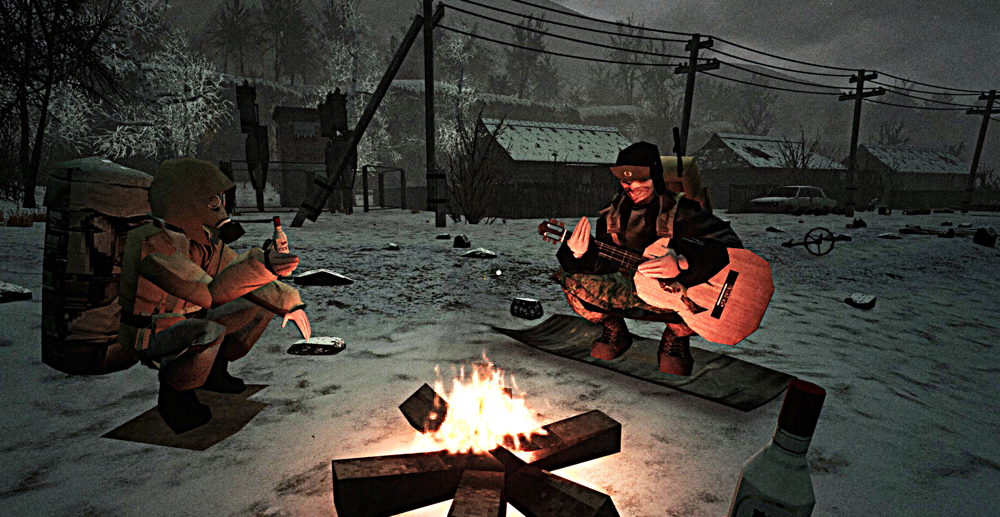

Misery é um jogo de sobrevivência e horror psicológico desenvolvido por um estúdio independente. O jogo se passa em um mundo pós-apocalíptico onde os jogadores devem enfrentar desafios constantes para sobreviver. Com uma atmosfera sombria e tensa, Misery oferece uma experiência imersiva e desafiadora.
o jogo se passa em um mundo pós-apocalíptico onde o jogo não deixa muito claro oque aconteceu no jogo. pois ao iniciar o jogador é colocado em uma casa onde tem 60 segundos para coletar o maximo de itens na casa.
o jogo não revela muitos detalhes sobre sua história, mantendo um clima de mistério e suspense ao longo da jogatina.

Historia
a lore de “MISERY”, mostrando como a região fictícia de Soslovye foi destruída após uma guerra nuclear ligada a anomalias misteriosas estudadas pelo instituto secreto CERZES. Essas anomalias criavam artefatos com propriedades sobrenaturais, atraindo o interesse militar de vários países.
Quando uma bomba nuclear atingiu a região, ela reagiu de forma inesperada com as anomalias, distorcendo espaço, radiação e realidade. O governo entrou em colapso, cidades foram destruídas e sobreviventes ficaram presos em uma “zona de exclusão” cheia de criaturas mutantes, fenômenos inexplicáveis e áreas que mudavam sozinhas.
Com o tempo, surgiram teorias de que a bomba não destruiu as anomalias, mas se sincronizou com elas, fazendo a zona parecer viva e adaptativa. Caminhos mudam, ruínas se reorganizam e transmissões antigas voltam a tocar como se a região tivesse consciência própria. A explosão não foi o fim, mas o começo de algo muito pior.
◎
Comprar MISERYno Steam
MISERY é um jogo de sobrevivência cooperativo para 1 a 10 jogadores em uma zona nuclear.
Vasculhe ruínas radioativas em busca de recursos, construa um bunker, crie armas e explore
o mundo gerado proceduralmente com seus amigos.
.jpg)